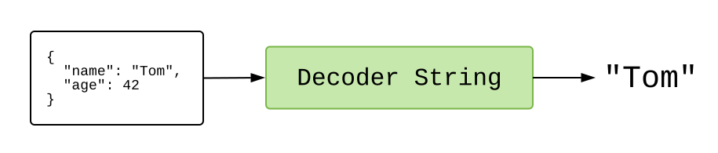

JSON
Nous venons de voir un exemple qui utilise HTTP pour obtenir le contenu d'un livre. C'est très bien, mais un grand nombre de serveurs renvoient des données dans un format spécial appelé JavaScript Object Notation, ou JSON en abrégé.
L'exemple suivant montre donc comment récupérer des données JSON, ce qui nous permet d'appuyer sur un bouton pour afficher des GIFs aléatoires de chats. Cliquez sur le bouton bleu "Edit" et regardez un peu le programme. Essayez de ne pas regarder uniquement les chats ! Cliquez sur le bouton bleu maintenant !
import Browser
import Html exposing (..)
import Html.Attributes exposing (..)
import Html.Events exposing (..)
import Http
import Json.Decode exposing (Decoder, field, string)
-- MAIN
main =
Browser.element
{ init = init
, update = update
, subscriptions = subscriptions
, view = view
}
-- MODEL
type Model
= Failure
| Loading
| Success String
init : () -> (Model, Cmd Msg)
init _ =
(Loading, getRandomCatGif)
-- UPDATE
type Msg
= MorePlease
| GotGif (Result Http.Error String)
update : Msg -> Model -> (Model, Cmd Msg)
update msg model =
case msg of
MorePlease ->
(Loading, getRandomCatGif)
GotGif result ->
case result of
Ok url ->
(Success url, Cmd.none)
Err _ ->
(Failure, Cmd.none)
-- SUBSCRIPTIONS
subscriptions : Model -> Sub Msg
subscriptions model =
Sub.none
-- VIEW
view : Model -> Html Msg
view model =
div []
[ h2 [] [ text "Random Cats" ]
, viewGif model
]
viewGif : Model -> Html Msg
viewGif model =
case model of
Failure ->
div []
[ text "I could not load a random cat for some reason. "
, button [ onClick MorePlease ] [ text "Try Again!" ]
]
Loading ->
text "Loading..."
Success url ->
div []
[ button [ onClick MorePlease, style "display" "block" ] [ text "More Please!" ]
, img [ src url ] []
]
-- HTTP
getRandomCatGif : Cmd Msg
getRandomCatGif =
Http.get
{ url = "https://api.giphy.com/v1/gifs/random?api_key=dc6zaTOxFJmzC&tag=cat"
, expect = Http.expectJson GotGif gifDecoder
}
gifDecoder : Decoder String
gifDecoder =
field "data" (field "image_url" string)
Cet exemple est assez similaire au précédent :
initnous fait démarrer dans l'étatLoading, avec une commande pour obtenir un GIF de chat aléatoire.updategère le messageGotGifà chaque fois qu'un nouveau GIF est disponible. Quoi qu'il se passe ici, nous n'avons pas de commande supplémentaire. Il gère également le messageMorePleaselorsque quelqu'un appuie sur le bouton, émettant une commande pour obtenir plus de chats aléatoires.viewvous montre les chats !
La principale différence réside dans la définition de getRandomCatGif. Au lieu d'utiliser Http.expectString, nous sommes passés à Http.expectJson. Quel est le problème avec ça ?
JSON
Lorsque vous demandez à api.giphy.com un GIF de chat au hasard, leur serveur produit une grosse chaîne de JSON comme celle-ci :
{
"data": {
"type": "gif",
"id": "l2JhxfHWMBWuDMIpi",
"title": "cat love GIF by The Secret Life Of Pets",
"image_url": "https://media1.giphy.com/media/l2JhxfHWMBWuDMIpi/giphy.gif",
"caption": "",
...
},
"meta": {
"status": 200,
"msg": "OK",
"response_id": "5b105e44316d3571456c18b3"
}
}
Nous n'avons aucune garantie sur quelconque de ces informations. Le serveur peut changer les noms des champs, et les champs peuvent avoir des types différents dans des situations différentes. C'est un monde sauvage !
En JavaScript, l'approche consiste à transformer le JSON en objets JavaScript et à espérer que tout se passe bien. Mais s'il y a une faute de frappe ou des données inattendues, vous obtenez une exception d'exécution quelque part dans votre code. Le code était-il mauvais ? Les données étaient-elles erronées ? Il est temps de commencer à creuser pour le découvrir !
Dans Elm, nous validons le JSON avant qu'il n'entre dans notre programme. Ainsi, si les données ont une structure inattendue, nous l'apprenons immédiatement. Il n'y a aucun moyen pour une mauvaise donnée de se faufiler et de provoquer une exception d'exécution trois fichiers plus loin. Ceci est rendu possible grâce aux décodeurs JSON.
Décodeurs JSON
Disons que nous avons du JSON :
{
"name": "Tom",
"age": 42
}
Nous devons le faire passer par un Decoder pour accéder à des informations spécifiques. Ainsi, si nous voulons obtenir l'"age", nous ferons passer le JSON par un Decoder Int qui décrit exactement comment accéder à cette information :

Si tout se passe bien, nous obtenons un Int de l'autre côté ! Et si nous voulions le champ "name", nous ferions passer le JSON par un Decoder String qui décrit exactement comment y accéder :

Si tout se passe bien, nous obtenons un String de l'autre côté !
Mais comment créer des décodeurs comme celui-ci ?
Construction des blocs
Le paquet elm/json nous donne le module Json.Decode. Il est rempli de petits décodeurs que nous pouvons assembler.
Ainsi, pour obtenir "age" à partir de { "name" : "Tom", "age" : 42 }, nous devons créer un décodeur comme celui-ci :
import Json.Decode exposing (Decoder, field, int)
ageDecoder : Decoder Int
ageDecoder =
field "age" int
-- int : Decoder Int
-- field : String -> Decoder a -> Decoder a
La fonction field prend deux arguments :
String— un nom de champ. Nous demandons donc un objet avec un champ"age".Decoder a— un décodeur à essayer ensuite. Donc si le champ"age"existe, nous allons essayer ce décodeur sur la valeur qu'il contient.
Ainsi, field "age" int demande un champ "age", et s'il existe, il exécute le Decoder Int pour essayer d'extraire un entier.
Nous faisons à peu près la même chose pour extraire le champ "name" :
import Json.Decode exposing (Decoder, field, string)
nameDecoder : Decoder String
nameDecoder =
field "name" string
-- string : Decoder String
Dans ce cas, nous demandons un objet avec un champ "name", et s'il existe, nous voulons que la valeur soit un String.
Imbriquer des décodeurs
Vous vous rappelez des données de api.giphy.com ?
{
"data": {
"type": "gif",
"id": "l2JhxfHWMBWuDMIpi",
"title": "cat love GIF by The Secret Life Of Pets",
"image_url": "https://media1.giphy.com/media/l2JhxfHWMBWuDMIpi/giphy.gif",
"caption": "",
...
},
"meta": {
"status": 200,
"msg": "OK",
"response_id": "5b105e44316d3571456c18b3"
}
}
Nous voulions accéder à response.data.image_url pour afficher un GIF aléatoire. Eh bien, nous avons les outils pour le faire, maintenant !
import Json.Decode exposing (Decoder, field, string)
gifDecoder : Decoder String
gifDecoder =
field "data" (field "image_url" string)
C'est la définition exacte de gifDecoder que nous avons utilisée dans notre programme d'exemple ci-dessus ! Y a-t-il un champ "data" ? Est-ce que cette valeur a un champ "image_url" ? Est-ce que cette valeur est une chaîne de caractères ? Toutes nos attentes sont écrites explicitement, ce qui nous permet d'extraire en toute sécurité des valeurs Elm à partir du JSON.
Combiner des décodeurs
C'est tout ce dont nous avions besoin pour notre exemple HTTP, mais les décodeurs peuvent faire plus ! Par exemple, que faire si nous voulons deux champs ? Nous assemblons les décodeurs avec map2 :
map2 : (a -> b -> value) -> Decoder a -> Decoder b -> Decoder value
Cette fonction prend en entrée deux décodeurs. Elle les essaie tous les deux et combine leurs résultats. Nous pouvons donc maintenant combiner deux décodeurs différents :
import Json.Decode exposing (Decoder, map2, field, string, int)
type alias Person =
{ name : String
, age : Int
}
personDecoder : Decoder Person
personDecoder =
map2 Person
(field "name" string)
(field "age" int)
Ainsi, si nous utilisions personDecoder sur { "name" : "Tom", "age" : 42 }, nous obtiendrions une valeur Elm de ce type : Personne "Tom" 42.
Si nous voulions vraiment entrer dans l'esprit des décodeurs, nous définirions personDecoder comme map2 Person nameDecoder ageDecoder en utilisant nos définitions précédentes. Il faut toujours construire ses décodeurs à partir de blocs plus petits !
Prochaines étapes
Il y a un grand nombre de fonctions importantes dans Json.Decode que nous n'avons pas couvertes ici :
bool:Decoder Boollist:Decoder a -> Decoder (List a)dict:Decoder a -> Decoder (Dict String a)oneOf:List (Decoder a) -> Decoder a
Il existe donc des moyens d'extraire toutes sortes de structures de données. La fonction oneOf est particulièrement utile pour du JSON un peu chaotique. Par exemple, parfois vous obtenez un Int et d'autres fois vous obtenez une String contenant des chiffres. C'est tellement pénible !
Il y a aussi map3, map4, et quelques autres pour gérer les objets avec plus de deux champs. Mais lorsque vous commencez à travailler avec des objets JSON de plus grande taille, cela vaut la peine de consulter NoRedInk/elm-json-decode-pipeline. Les types y sont un peu plus sophistiqués, mais certaines personnes les trouvent beaucoup plus faciles à lire et à utiliser.
Fait amusant : J'ai entendu plusieurs histoires de personnes qui ont trouvé des bugs dans leur code serveur lorsqu'ils sont passés de JS à Elm. Les décodeurs que les personnes écrivent finissent par fonctionner comme une phase de validation, capturant des bizarreries dans les valeurs JSON. Ainsi, lorsque NoRedInk est passé de React à Elm, cela a révélé quelques bugs dans leur code Ruby !